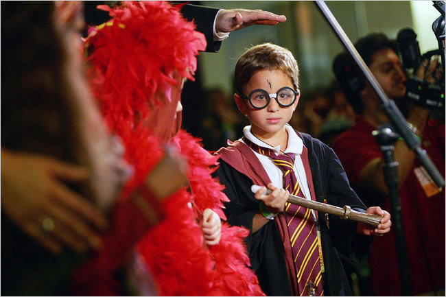
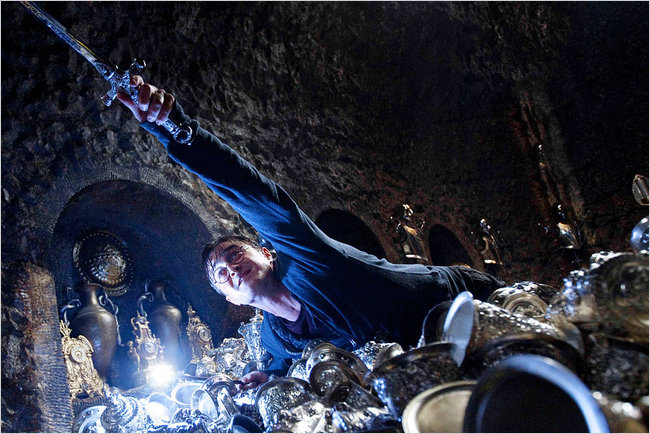

HARRY POTTER’S final battle with Lord Voldemort will hit movie screens on July 15, but that young wizard has already scored a decisive victory where it counts: at the box office, on best-seller lists and in the crowded arena of fantasy-driven popular culture. J. K. Rowling, a single mother when she hatched a series of magical boarding-school novels, has ascended to an Oprah-like level of wealth and influence, while Harry, with more than $6 billion in tickets sold globally, has surpassed James Bond as the top-grossing movie-franchise hero.
Like the books the Harry Potter movies have grown progressively darker and more complex, as the initially stark moral universe of good and evil became increasingly shaded by prickly, often confusing questions of sex and death (including the death in 2002 of Richard Harris, the first Dumbledore, who was replaced by Michael Gambon). The books and movies have fed the imaginations of fans with a richly conceptualized, densely populated world of plucky school kids, giants, dragons, trolls and adult wizards, benign and malevolent, played by the cream of British acting. Meanwhile Harry, Hermione and Ron, as incarnated by Daniel Radcliffe, Emma Watson and Rupert Grint, have grown up before our eyes.

A fan in costume at a book release party. Credit Josh Haner/The New York Times
“I was on the train when I suddenly had this basic idea of a boy who didn’t know who he was,”
Ms. Rowling once said, explaining the genesis of her creation as lightning hit her and then Harry. In the years since, the books and movies along with all the toys, games and even a Harry Potter theme park have helped show us that in today’s multiple-platform media landscape, a movie is no longer necessarily an evening’s entertainment but, in the case of those who came of age with Harry, that of a lifetime.
Here we look at what has become a hugely profitable corporate brand, a fan-fueled sensation and one of the biggest entertainment stories of the last decade.

Daniel Radcliffe in “Harry Potter and the Deathly Hallows: Part 2.”
This is not the first time a popular series of books has been turned into a successful series of movies, but the overlap between the literary and cinematic versions of the Potter cycle was unusual, and has proven influential. Not every effort to repeat the formula has worked — the “Lemony Snicket” and “Golden Compass” franchises never took wing on screen — but the triumph of the Potter model is reflected in the “Twilight” movies and also in the Swedish and soon-to-arrive American versions of Steig Larsson’s “Millennium” trilogy, which tumbled into theaters while their sources were still jumping off the bookstore shelves. In this millennium, we like to take our stories serially and in multimedia packages.